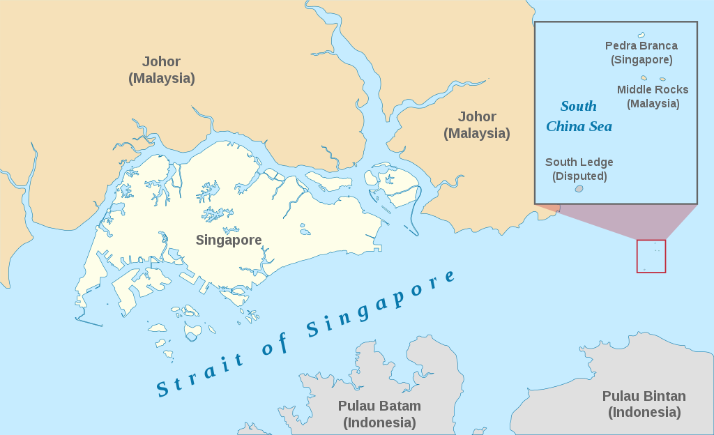
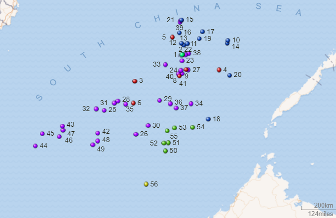

Barisan National Era
Hussein Onn
- In 1976, after Abdul Razak died, Tun Hussein Onn became prime minister
- Hussein Onn presided over a generally peaceful and multiracial coaltion
- Onn strongly opposed the immigration of Vietnamese refugees to Malaysia
- Onn also strengthened Malaysia's role in ASEAN and helped bring Brunei into the assocciation
- In 1981, Onn was forced to resign do to heart problems and named Mahathir Bin Mohamad as his successor
Mahathir Mohamad
- Operation Lalang marked the beginning of a period of Mahathir's authoritarian rule
- Mahathir served as PM for 22 years and was authoritarian in style but saw economic success
- Under Mahathir, the UMNO saw a split into Team A and Team B and eventually into UMNO Baru and Semangat 46
- Under Mahathir, Malasyia was transitioned into an industrialized nation
- Mahathir welcomed foreign investment, reduced tariffs, and privatized state-owned enterprises
- Under Mahathir, the Malaysian economy prospered with a growing manufacturing sector, expanding middle class, rising literacy rates, and increased life expectancy
- Mahathir was a rival of Tunku Abdul Rahman in the UMNO and advocated for ethnic Malay nationalism and the NEP
- Mahathir was also distrustful of the west and didn't support things like the US intervention in Iraq in 2003
Federal Territories of Malaysia
- In 1948, Kuala Lumpur became the national capital of the Federation of Malaya
- After the May 13 riots, Kuala Lumpur was subject to clashes between the federal government (Alliance majority) and the Selangor state government (opposition majority)
- In February 1974, Kuala Lumpur was split off from Selangor and made a federal territory to solve the issue
- The change made it so that Kuala Lumpur residents could no longer vote in Selangor state elections and only federal parliamentary elections
- In April 1984, Labuan became the second federal territory as it was chosen to be an offshore financial center by the federal government
- In February 2001, Putrajaya became the third federal territory as the federal government made it a planned city to replace Kuala Lumpur as the seat of the federal government
Kelantan Emergency
- In 1977, the Chief Minister of Kelantan was Mohamed Nasir of the PAS
- Later in 1977, Nasir experienced disatisfaction from within the PAS and they voted to have Nasir resign
- However, Nasir refused to resign and his supporters organized in protest in the streets of Kota Bharu resulting in mass violence and looting
- November 8, 1977, the Yang di-Pertuan Agong, Sultan Yahya Petra, also the Sultan of Kelantan declared a state of emergency in Kelantan on request from the federal government
- The next day the Emergency Powers (Kelantan) Act 1977 was passed to give Parliament power to govern the state
- 12/14 BN PAS members voted against the bill and the PAS was expelled from the BN as a result
- In March 1978, there were new elections in Kelantan with UMNO winning 23 seats, BERJASA 11 (Nasir's new party), and PAS 2 seats
- Following, BERJASA joined the BN and the UMNO formed a government in Kelantan for the first time
Pedra Branca Dispute
- Islands include: Pedra Branca, Middle Rocks, and South Ledge
- In 1850-51, Pedra Branca began being administered by Singapore after the UK built the Horsburgh Lighthouse on it
- The island was previously administered by the Sultan and Temenggung of Johor until it became part of the Straits Settlements in 1826
- In 1979, Malaysia published a map proclaiming the islands were theirs
- In 1980, Singapore diplomatically protested the map, claiming Pedra Blanca
- In 1993, Singpore claimed the islands of Middle Rocks and South Ledge
- In 1989, Singapore proposed a dispute in the ICJ and Malaysia agreed in 1994
- The ICJ case began in 2007 and Singapore argued that Pedra Branca (Singapore said all the islands were one entity) was terra nullius ("land belonging to no one") and that there is not evidence the islands ever belonged to the Johor Sultanate but rather the UK for the construction of the lighthouse in 1847
- Malaysia's case was that that Johor had the original title to Pedra Branca, Middle Rocks and South Ledge, that the islands were not a single entity, and that the British just built the lighthouse but sovereignty over the islands stayed with Johor.
- A controversy with the case was that Malaysia's main evidence was a letter they said the Johor Temanggung recieved from Britain asking for permission to build the lighhouse but left sovereignty over the island with Johor, however Malaysia claimed the letter was in Singapore's archives, which Singapore denied.
- Largely resolved by the ICJ in 2008 after they ruled Pedra Branca was Singapore's (12-4), Middle Rock was Malaysia's (15-1), and South Ledge was both since it was in overlapping waters (15-1).
- The ICJ ruling largely pleased both sides and the Joint Technical Committee was established in 2008 to delimit boundary areas adn determine ownership of South Ledge..

Islamic Movement
- Islam was introduced in the Malay Peninsula in 1100's CE and was the majority faith by the 1400-1500s with the rise of the Sultan
- Following WW2, the first Islamic political movements began to form with the Malay Nationalist Party (MNP) but was dissolved during the Malay Emergency
- In 1951, this movement would reform into the Pan Malayan Islamic Party (PAS) as a splinter group of the UMNO
- When Malaysia was formed, Sunni Islam was named the country's religion due to recommendations to do so from the Reid Commission, other religions remained legal constitutionally but freedom of religion is still limited (including a complete ban on Shia Islam)
- The constitution stated that you must be Muslim to be an ethnic Malay
- In 1972, the PAS president Asri Muda announced that the party would be joining the Alliance Party (UMNO-PAS partnership)
- PAS was most popular in the rural states such of Kelantan, Terengganu, Perlis, and Kedah
- In the 1974 general election, PAS got their most parliament seats (14) but Asri left BN (Alliance Party) in 1977, severely damaging PAS popularity (only 5 seats in 1978 election)
- In the late 1970s, the dakwah or Islamic fundumentalist revival grew among the younger generation who disliked the westernization of Malay society
- In 1977, during the Kelantan Emergency, the Islamic BERJASA political party was formed as a splinter group of the PAS
- In the 1978 election, BERJASA joined BN and won 11 state seats in Kelantan (UMNO got 23, PAS got 2) but their popularity quickly dissolved in subsequent elections
- Before the Islamic revival, many Malay Muslims only followed moderate Islam but after the revival, Malaysia transformed into a more Islamic enviornment
- Today, almost all ethnic Malays are Muslim and about 70% of Malay Muslim women wear headscarves (which popularized during the 1980s)
Spratly Island dispute
- The Spratly islands are a small group of islands in the South China sea with maritime features (cays, reefs, banks), oil reserves, and commercial fishing grounds.
- China, the Philippines, Taiwan, and Vietnam claim the whole spratly islands, while Brunei and Malaysia claim part of the islands.
- Malaysia's claims to some of the islands are only ones that are in its exclusive economic zone (exclusive rights over a territory) of 200 miles as defined by the UN Convention on Law of the Sea (UNCLOS) that was signed in 1982
- This claim requires that the islands are res nullius (land belongs to nobody), which was satisfied when Japan renounced the islands after the end of WW2 with the signing of the San Francisco Treaty
- Malaysia militarily occupies the 5 islands it considers as part of Malaysia
- In 1971, Malaysian issued their first claims over some of the Spratly Islands
- In 1979, Malaysia published a map of their continental shelf (the Pedra Branca one) that included 12 of the Spratly islands
- Swallow Reef became Malaysian military occupied in 1983 and has been turned into an island through land reclamation.
- Malaysia also military occupies Ardasier Reef and Mariveles Reef
- In 1992, Malaysia and Vietnam jointly agreed to develop areas around these disputed islands
- In 1994, Malaysia agreed to sign the UNCLOS
- In 2009, the UNCLOS allowed for extended limits beyond 200 miles and Vietman and Malaysia made a new joint claim over a "defined area" in the middle of the South China Sea between the two countries and that included part of the Spratly Islands
- In 2010, it was reported that Mahathir Mohamad believed he could profit from economic growth with China and that they were not a threat to the region
- Malaysia has since shifted to actively condemning China as they encroach into its territorial waters.
- In 2011, China, Brunei, Malaysia, the Phillipines, Taiwan, and Vietnam agreed to a set of guidelines called the Declaration of Conduct of Parties in the South China Sea (DOC) to help resolve maritime disputes.
- Indonesia is not part of the SCS dispute but between 2014-2019 had destroyed 87 Malaysian ships (out of 556 total) for violating their rules

Malaysia: 50: Swallow Reef 51: Ardasier Reef 52: Dallas Reef 53: Erica Reef 54: Investigator Shoal 55: Mariveles Reef
Federal Territory of Labuan (1984)
- In 1848, Labuan became a crown colony under James Brooke with the intention of making it into the next Singapore
- In 1907, Labuan became one of the Strats Settlements
- During WWII, from 1942-45, Labuan was occupied by the Japanese
- In 1946, Labuan again came under British military control and joined the North Borneo Crown Colony
- In 1963, Labuan joined Sabah during the formation of Malaysia
- Finally, in 1984, Sabah ceded Labuan to the Malaysian federal government and it soon became a federal territory
- This means that Labuan is governed by the Malaysian federal government under the Department of Federal Territories under the Prime Minister's Department
- Labuan is governed municipally by the Labuan Corporation, they also have on representative for both houses in the Malaysian Parliament
- In 1990, Labuan was declared as an international offshore financial center and free trade zone
- Labuan is now a base for 4,800 offshore companies and 68 licensed banks.
Memali Incident (November 1985)
- Code name: Operasi Angkara (Operation Cause) and Operasi Hapus (Operation Destroy)
- Location: remote village of Kampung Memali, Baling in Kedah
- In 1981, the president of the PAS, Hadi Awang, claimed that the UMNO was unIslamic because they were colonialist and said any struggle against the UNMO is therefore jihad and that anyone who died in a struggle was al-Shahid (martyrs)
- This occured at I time when there was severely strained UMNO-PAS relations, some PAS members even suspected some UMNO members of being secular
- Ibrahim Mahmud was an Islamic scholar who studied in Libya (nickname was Ibrahim Libya) and was very popular amont the village folk, who vowed to defend him to their death
- Ibrahim was wanted by the police under the Internal Security Act for creating discord and disharmony and harbouring the two Che Mit brothers who were figitives
- On November 19, 1985, a team of 200 policemen laid siege to the Kampung in Memali, where Ibrahim was leading an Islamic sect of 400 people
- The siege resulted in 14 dead villagers (including Ibrahim) and 4 dead policemen; 159 arrests were made.
- The Malaysian government later released footage of the incident of wounded police on national TV and a white paper
- The PAS referred to the deaths as martyrs and set up a fund for the victim's family's but the Kedah government said not all that had died where martyrs in a fatwa
Operation Lalang (October 1987)
- Code name: Operation Laling (Operation Weeding)
- In 1986 and 1987, a split occured within the UNMO, a Team A led by Mahathir and a Team B led by Tengku Razaleigh Hamzah/Musa Hitam
- In 1986, Deputy PM Musa Hitam resigned, citing irreconcilable differences with Mahathir
- Mahthir's leadership was challenged as Tengku Razaleigh Hamzah tried to take his spot as UMNO president and thus as PM, but Mahathir narrowly won
- Mahathir oversaw attacks by the government on several NGOs critical of the government and a rise in race/religious/ethnic related tensions/issues
- There were a myriad of these issues but the main one was the Ministry of Education's decision to appoint over 100 senior assistants/supervisors to Chinese-medium primary schools, raising Chinese concern that the students might be forced to use English or Malay in school
- On 11 October 1987, over 2000 people demonstrated, led by the United Chinese School Committees Association of Malaysia, joined by leaders from the MCA, DAP, and GERAKAN, to protest the government's decision at 57 of the schools.
- On 17 October 1987, the UMNO Youth responded with their own 10,000 strong rally and UMNO politicians condemned MCA leaders
- On 18 October 1987, in an unrelated incident, a Malay soldier (Prebet Adam) rampaged and killed a Malay near Kuala Lumpur between two large Chinese/Malay communities
- While PM Mahathir was away abroad, UMNO politicians planned a large UMNO rally in Kuala Lumpur on November 1 but was later cancelled when Mahathir returned and launched Operation Lalang
- On 27 October 1987, Mahathir and the police launched the operation and said it was needed to defuse the racial tension
- The operation began with a mass arrest of ~100 people under the ISA including: DAP/MCA/PAS/UMNO/Gerakan opposition political leaders, social activists and other for incitement of racial sentiment and showing Marxist tendencies.
- The publication liscenses of The Star, Sin Chew Jit Poh, the Sunday Star, and Watan newspapers were also revoked, after being critical of Mahathir
- Mahathir also restricted free assembly and announced a nationwide ban on any gathering or large rally and in December 1987 introduced legislation to further restrict publishing and give more power to the police to prevent rallies
- Tunku Abdul Rahman quote about the operation and Mahathir's authoratarianism: "We are on the road to dictatorship. I cannot see any other way... This is no democracy."
Constitutional Crisis (1988)
- In 1987, the UMNO held elections for its numerous offices with PM Mahathir (Team A) being challenged by Tengku Razaleigh Hamzah (Team B)
- However, Mahathir was the winner with 51% of the vote, Razaleigh's (48.5% of the vote) supporters called the election rigged and were further angered when Mahathir purged all Team B members from the Cabinet
- This was followed by 12 UMNO members filing a lawsuit with the High Court seeking a reelection.
- The UNMO formed a "Unity Panel" to try and reach a compromise but failed and Team B continued to seek a final judgement from the High Court
- This angered Mahathir, who had previously had spates with the court, and began making public heated attacks on the judged within the High Court
- Judge Harun, finally made a judgement and declared the UMNO "an unlawful society", thereby rendering "[w]hat happened in 1987" a nullity.
- Within the next two weeks, Mahathir announced the registration of the UMNO Baru (new UMNO), whose leadership was almost entirely composed of Team A.
- The Team B "UMNO 11" went on to appeal their case with the Supreme Court, looking to achieve new elections, but the case was rejected.
- Razaleigh would go on to split off and form the Semangat 46 (Spirit of 46) party and the UMNO Baru then dropped the "Baru" from their name, with both parties claiming to be the true successor to the UMNO.
- The UMNO 11 case was just one of many that angered Mahathir and following Operatin Lalang, he sumbitted several consitutional amendments to parliament
- These included divesting hte courts of hte "judicial power of the Federation" and giving them only such judicial powers as Parliament might grant them
- The Supreme Court and High Court judges responded by writing a secret letter to the Yang di-Pertuan Agong and the Malay rulers expressing their greviances and asked for help in stopping Mahathir's accusations of corruption
- In 1988, the Lord President of the Supreme Court, Tun Sallah Abas, and 5 other supreme court justices were suspended, effectively suspending the supreme court.
- Critics of Mahathir's actions, such as Tunku Abdul Rahman, called them "disgusting" while Mahathir supporters said he was liberating Malaysian judiciary from a colonial mindset and justified this with claims that the judges were abusing public funds for personel expenses such as luxury Italian furniture.
Royal Immunity Ammendments (1993)
- Before 1993, the royalty could violate the law without persecution, unless they voluntarily wished to surrender their legal immunity
- In the 1990 general election, the Sultan of Kelantan, allegedly campaigned for Semangat 46 and PAS, resulting in the BN losing control of Kelantan to them.
- This outraged Mahathir, who said that the royal support for Semangat 46 violated the constitutionally required neutrality of royalty.
- In March 1992, the BN-led government and royalty relations further deteriorated when the government said the Kelantan Sultan owed $2.1 million ringgit after failing to pay taxes for the purchase of 20 Lamborghinis, the Sultan responded by calling for the implementation of Islamic laws in the PAS led state
- In July 1992, the son of Sultan Iskandar, the Sultan of Johor, assaulted a Perak hockey goalkeeper after Perak beat Johor in a championship.
- This upset Douglas Gomez, a hockey coach, who made public critisisms, which in turn made the Sultan angry
- In November 1992, the Sultan summoned Gomez to the Sultan palace, where Gomez was beaten by the Sultan, infront of his bodyguards.
- The Gomez incident was widely covered in Malaysian-state media and led to further widespread public outrage.
- In December 1992, parliment began proposing amendments to remove royal legal immunity but were not able to pass anything because the royalty needed to endorse the amendments, which they didn't
- The Dewan Rakyat and Dewan Negara were finally able to reach a compromise with the Agong that allowed the rulers to delay any legislation within 60 days (previous proposal was only 15 days)
- In March 1993, the amendments passed with the aim of removing legal immunity of the royalty
- Amendments to Articles 32, 38, 42, 63, 72 and 181 in the Constitution of Malaysia
- In May 1994, a further amendment was passed that allowed laws passed by both the Dewan Rakyat and the Dewan Negara to become law within 30 days, even without approval of the Agong.
Financial Crisis (1997-98)
- In the early 1980s, Anwar Ibrahim gained rapid popularity in the BN
- Ibrahim was widely believed to be the successor to Mahathir
- In 1993, Anwar was elected as deputy president of the UMNO
- In 1997, the Asian financial criris occured, sparking from the financial collapse of the Thai baht
- The fallout quickly spread to Malaysia, the ringgit was heavily traded by speculators causing rating downgrades and a selloff of Malaysian stocks/currency.
- Malaysian credit dropped from investment grade to junk, the KLSE dropped from 1200 to 600, and hte ringgit dropped from 2.50/dollars to 4.57/dollars.
- Mahathir imposed strict capital controls (stopping overseas trade in riggit, restricing overseas investment abroad, restricting foreign portfolio funds) and announced a 3.80 peg to the US dollar
- Anwar was the finance minister in 1997 and differed in economic prescription opinion against Mahathir on how to rescue the economy
- By 1998, Malaysia had plunged into a recession with GDP dropping 6.2%, riggit dropping to 4.7/dollar, and KLSE dropping below 270 points.
- In September 1998, further capital controls were imposed and IMF aid was refused
- Also in September 1998, Mahathir removed Anwar from office, leading to Reformasi movement
- By 2005, Malaysia had returned to a $14 billion dollar surplus, however foreign investment and investor confidence has not returned to what it was pre-1997.
Reformasi Movement (1998-2022)
- During the 1997-98 financial crisis, Anwar (apparent heir to Mahathir) and Mahathir differed in opinion on how to save the economy, especially relating to IMF loans
- Mahathir wanted to stabilize the currency to cushion further speculation in the economy while Anwar advocated for IMF-style, free-market oriented corrective measures.
- The economy eventually began to recover under Mahathir's measures but Anwar continued to express opposition.
- This resulted in September 1998, in Mahathir removing Anwar from office and expelling him from the UMNO
- Following, Anwar began to lead public lectures against Mahathir, mostly among the youth who agreed with him on social justice and social safety nets for the economy.
- Opposition parties DAP and PAS also supported Anwar
- Still in September, 18 days after being removed from office, Mahathir finally arrested Anwar (and many of his supporters) and charged him with corruption and sexual misconduct (which he was eventually convicted of in 1999 when he was sentenced to 6 years in prison for corruption and later 9 years for sodomy)
- The conviction of Anwar has been widely discredited by the international community including the US, Amnesty International, and Indonesia and Anwar was seen photographed with a black eye while in custody
- In 2004, the Federal Courth overturned Anwar's sodomy convition and he was immediately released
- This (and to a lesser extent the factionalism within the UMNO/Semangat 46) led to protests, initiated by Anwar's arrest, under the banner of Reformasi, that were in support of Anwar and claimed the charges were only to huminiate him and to clear all potential rivals of Mahathir.
- The protester's demands where for Mahathir to step-down and the BN led government to end
- The protests broke out when Malaysia was hosting the Commonwealth Games and were untraditionally not racial based
- The demonstrations mostly tapered out by November 1998 but still continue for key dates such as Anwar's arrest day
- Reformansi demonstratons have sprung up as recently as 2018
- The movement also resulted in the PAS and other smaller Islamic parties joining to form the GERAK coalition and the DAP and other smaller parties to form GAGASAN coalition in opposition to the BN
- In 1999, Reformansi also led to a new liberal democracy supporting multiracial-based party names Parti Keadilan Nasional (KEADILAN or PKR), that was formed by Anwar's wife, Wan Azizah Wan Ismail
- The PAS, DAP and PKR forming the Barisan Alternatif coalition to take on the BN in the 1999 elections
- In the 1999 elections, the BN won 148/193 seats but the BA alliance stole 22 seats from the UMNO after running on reform policies
- However, in the 2004 election the BN came back strong and took back to 198/219 seats, mainly due to malappointment and gerrymandering
- After the BA's defeat in 2004, the coalition was disbanded (BA also had fragmentation due to PAS insisting on an Islamic state and the DAP leaving in 2001 after 9/11)
- In September 2004, Anwar was released and in the 2008 elections he led the PKR to win 31 seats and cause the BN to lose their 2/3rds majority (DAP/PAS/PKR together won 81 seats as PR coalition to UMNO's 140 seats).
Abdullah Ahmad Badawi PM (2003-2009)
- Abdullah Amnad Badawi was a member of UMNO Team B (Mahathir was Team A) but didn't joing Semangat 46 after being sacked from the UMNO for supporting Team B
- In 1988, Mahathir brought Abdullah into the committee of the UMNO and was made vice president
- In 1991, Mahathir made Abdullah the foreign minister during a cabinet resuffling
- In January 1999, PM Mahathir appointed Abdullah as deputy prime minister
- In October 2003, Mahathir retired as PM of Malaysia and Abdullah succeeded him as PM (Mahathir hand picked Abdullah)
- Abdullah promised to clamp down on government corruption and advocated for a more moderate form of Islam over religious funamentalism
- However, corruption in the government and judiciary continued and Malaysia also struggled economically
- Abdullah was reelected as PM in a significant victory in 2004 (BN won 198/220 seats).
- The Mahathir out of office, Anwar's convition was overturned by the Malaysia High Court and he was released in 2004
- In 2006, when fightinf between Israel and Hezbollah broke out, Abdullah condmned the international community's "paralysis" and sent 360 troops to join the international peacekeepeing force in Lebanon
- In the lead up to the 2008, Abdullah faced growing criticism for his failure to curtail corruption
- In the 2008 elections, Abdullah was releected with a smaller majority
- With the loss of the BN two third majority in the 2008 elections, many called for Abdullah to resign, including Mahathir (who quit the party until Abdullah stepped down)
- After the 2008 elections results (PKR took 31 seats), Badawi resigned as PM in April 2009 and the 5 year political ban on Anwar Ibrahim was lifted also in April 2009
- In April 2009, Najib Razak succeded Abdullah as PM
Rise of Pakatan Ratyat (2008)
- In April 2008, the PAS, DAP, and PKR announced a new informal alliance led by Anwar's wife, Wan Azizah Wan Ismail, to be the successor to the BA: Pakatan Rakyat (People's Alliance)
- The PR was an informal coalition because they were never registered with the Registrar of Societies
- Policies: transparent democracy, high performance and equitable economy, social justice and human development, federal system with Sabah and Sarawak
- Together, the coalition stunningly won 82/222 parliamentary seats in the 2008 general election, allowing the BN to lose their 2/3rd majority with only 140 seats
- In 2010, the PR was joined by the Sarawak National Party (SNAP)
- In the 2013 general elections, the PR was still unregistered and lost the the BN, who won 133/222 federal seats
- In June 2015, DAP secratary general Lum Guan Eng said that the PR was ceasing to exist
Najib Razak PM (2009-2018)
- Razak was the son of Abdul Razak (PM from 1970-76), nephew of Hussein Onn (PM from 1976-1981)
- Razak entered politics to replace his father in parliament after his death and was seen as a rising star in the UMNO
- In March 2009, Razak was elected leader of the UMNO, preparing for a transfer from Abdullah
- In April 2009, Najib Razak succeded Abdullah as PM and became head of the BN
- Razak had historically embraced pro-Malay sentiment but had softened over time and stated his goal was fair treatment of all ethnic groups
- In the 2013 general elections, the BN lost the popular vote but still won a majority of parliamentary seats, Najib retaied his premiership
- In April 2015, Najib lost a huge amount of support when he enacted an unpopular 6% tax on goods and services
- Later in 2015 he also became implicated (was extensively referenced in court docs) in the 1MDB scandal, where $3.5 billion was embezzled and laundered
- In January 2018, while 1MDB was still going on, Mahathir announced he would be returning as a candidate for PM
- In a stunning upset, 92-year old Mahathir won with a narrow majority, claiming 122/222 seats.
- With Mahathir's win for the opposition, the BN's 6 decade hold on power was ended
- Najib was accused of various crimes involved in the 1MDB scandal, pledged not guilty, and in July 2020 was found guilty and sentenced to 12 years in prison
Swine flu pandemic (2009)
- In August 2009, a new influenza A virus subtype H1N1 virus (swine flu) outbreak occured as part of a larger pandemic in Malaysia
- The federal government declared a national emergency in Malaysia and considered imposing a health curfew
- The government also imposed health screenings carried out on passengers travelling to and from Mexico, where the outbreak originated
- By the end of August 2009, the total number of cases was 2253 but is estimated to be as high as 15,000+
Sedition Dragnet (2014)
- The Sedition Act was originally enacted under British Colonial rule and criminalizes speech with "sedition tendancy"
- Opposition politicians in Malaysia have decried the law, calling it outdated and draconian
- The Malaysian government consider the act necessary to maintain peaceful
- In 2012, Najib replaced the ISA (allowed for extrajudicial detention) with a less controversial Security Offenses Act and Najib made further promises to repeal the Sedition Act
- Between Feburary 2014 and September 2014 several citizens ranging from opposition politicians to university students to journalists were arrested under the Sedition Act
- 15 total arrests were made and most were either charged or are still being held
Malaysia Airlines Disasters (2014)
- In March 2014, Malaysian Airlines flight 370 disappeared en route from Kuala Lumpur to Beijing
- The transponder had been turned off on the plane when it was traveling east over the SCS when it turned around to go west over the Malay Peninsula
- Eventually, military radars in Malaysia lost the signal of the plane
- All 227 passengers and 12 crew members on the flight were presumed dead
- Following the disapearance, there was a search effort stretching from the Indian Ocean by Australia, all the was to Central Asia and would last until Jan 2017
- Three weeks after the disappearance, Najib announced that the plane was thought to have crashed in a remote part of the Indian Ocean 1500 miles southwest of Australia
- Between 2015-16, there were 27 plane parts found on various beached in Africa with 3 as identified as being from 370 and 17 likely having been
- The cause of the disappearance is still uncertain, but it was most likely a mass murder-suicide
- It was reported in 2016 that the pilot had flown the exact same path over the Indian Ocean in a flight simulator weeks before the incident as well as other revelations about his personal life, the transponder being turned off was also suspisious
- In July 2014, another disaster occured when Malaysia Airlines flight 17 was shot down while flying from Amsterdam to Kuala Lumpur
- The airliner was shot down while flying over territory contolled by Russian-backed separtists in eastern Ukraine
- All 298 people, mostly citizens of the Netherlands and including notable scientist Joep Lange, died in the crash
- As MH17 approached the Russian border, the cabin crew engaged in communication with air traffic controllers in Dnipro (Ukraine) and Rastav-na-Donu (Russia) before verbal communicaation from the plane was lost with no distress signal
- A Dutch investigation into the crash found that the aircraft was shot down by a Russian-made surface-to-air missile (Buk or SA-11) that was shot in from Russian-held territories, by Russian-led troops, and provided by the Russians
- Both Russia and the separtists refused to take blame and Russia vetoed a UN resolution to create a tribunal to assign blame for the incident
- Video evidence later surfaced of separtists sifting through the still-smoking wreckage, dismayed to find a civilian aircraft
- The Netherlands filed charges against three Russians and one Ukrainian, one of the Russians was Igor Girkin who was former FSB, and found three of them including Girkin guilty of murder
1MDB Scandal (2015)
- Ongoing corruption, bribery, and money laundering conspiracy where the Malaysian sovereign wealth fund, 1MDB, was systematically embezzeled with assets diverted by the scheme
- In 2009, after Najib was elected PM, in his first year in office he established 1Malaysia Development Berhad (1MDB), a sovereign wealth fund to be used to make strategic investments to alleviate poverty under the 1Malaysia program
- Jho Low was a Malaysian businessman who was given extensive access to the fund due to his high profile political connections
- Tim Leissner, chairman of Goldman Sachs, had previously made lucritive deals in Southeast Asia after the 2007-08 financial crisis and was introduced to Jho Low by the head of Goldman Sachs in Malaysia, Roger Ng
- Low, Leissner, and Ng worked together and used their political connections to establish deals and orchestrate the 1MDB scheme
- The scheme worked by Najib, Low, and Ng all making fake investments and diverting the funds to a Swish bank account to launder for themselves where they would use to buy luxury item and property to the tune of hundreds of millions of dollars
- A 2015 document leak showed that Najib had channeled over 2.67 billion RM ($ 700 milion) into his personal bank account from 1MDB
- Najib said these funds were from Saudi donors, who said they were aware of the donations, but the WSJ said that there was no evidence the money actually came from the Saudis
- In August 2015, a member of Najib's own UMNO filed a civil suit against him alleging he defrauded the party with 1MDB, Najib quickly moved to remove anyone who critisized him from office including his own deputy PM
- In Feburary 2016, Kedah Mahathir, Mahathir's son, resigned from office saying Najib forced him to for critisizing 1MDB and Mahthir Mohamad withdrew his support from the UMNO the same month
- As of 2018, the US government has found that Jho Low (mastermind of the scheme) and other officials from Malaysia, Saudi Arabia, and the UAE diverted more than $4.5 billion from 1MDB
- As of May 2019, Malaysia had recovered $322 million worth of 1MDB assets and as of April 2020, the DOJ had returned $300 million in 1MDB funds stolen
- In July 2020, Goldman Sachs would return $3.9 billion to Malaysia due to the 1MDB bonds
- A 2020 report from the Malaysian government also listed 1MDB's outstanding debts to be $7.8 billion
- The funds stolen from 1MDB were used to purchase luxury properties and items including a superyacht, financing the American film company Red Granite Pictures, and the production of the Wolf of Wall Street and other films
- Funds were also attempted to be used to put towards political donations and lobbying in the US
- When revelations first broke, Najib reacted by dismissing several opposition officials
- A major political scandal errupted and many called for Najib to be removed, including Mahathir
- In the US, Goldman Sachs was charged by the DOJ and other Americans charged in connection include rapper Pras, Goldman Sachs chair Tim Leissner and fundraiser Elliot Broidy
- In the 2018 elections, Mahathir was elected PM and reopened the Malaysian investigation into the scandal under a special task force, Najib was barred from leaving the country
- Najib was later charged with criminal breach of trust, money laundering and abuse of power and was found guilty and sentenced to 12 years in prison
- Jho Low was charged with money laundering by the Malaysia attorney general
- Roger Ng and Tim Leissner were charged with connection to 1MDB with their bond offerings by the Malaysia attorney general
- Countries that have opened investigations into connections to 1MDB include: Australia, Hong Kong, Indonesia, Kuwait, Luxembourg, Seychelles, Singapore, Switzerland, UAE, UK, US
- Fun Fact: $155 million was diverted from 1MDB to Red Granite Pictures (ran by Najib son Riza Aziz) to help finance The Wolf of Wall Street
Mahathir's return to PM (2018)
- Following 1MDB, Mahathir emerged from retirement to chastise Najib and broke from the BN to join the opposition
- In the May 2018, the PH won a majority and Mahathir (92-years old) returned to power as PM
- Mahathir stated he would pursue a royal pardon for Anwar, which would allow him to hold office
Pakatan Harapan Takeover (2018)
- In Jan 2012, the 2008 charges on Anwar were overturned but this was then overturned and Anwar was sentenced to 5 years in prison
- In 2015, the Pakatan Harapan (PH), a center-left coalition of political parties was formed
- The PH was a direct successor to the Pakatan Rakyat (PKR, DAP, and PAS)
- In the PR, PAS and DAP had disagreements regarding sharia law, resulting in a new coalition in Sept 2015 with the old PR and a new PAS splinter group called the National Trust Party
- In April 2018, Najib Razak dissolved the Parliament, opinion polls at the time favored the PH to win the next election but opposition fears of gerrymandering remained
- In Nov 2016, the UMNO splinter group, BERSATU, founded and led by Mahathir joined the PH
- Mahathir was made the coalition's chairman and Wan Azizah (Anwar wife) was made the president, Anwar was the defacto leader despite being imprisoned
- In the May 2018 elections, the Pakatan Harapan and the Sabah Heritage Party (WARISAN), had an electoral pact and claimed 122/222 seats
- The PH won state elections in Kedah, Penang, Perak, Selangor, Malacca, Negeri Sembilan, Johor, and Sabah
- The election marked the first time in Malaysia history that the ruling BN was voted out of power and one of the greatest political upsets in history
- The election results led to nationwide celebrations for the end to BN rule, there were also a number of withdraws of parties from the BN to new coalitions or the PH
- The PH was lead by Mahathir Mohamad, who was 93 years old; Najib resigned shortly after the election and was suceeded by Ahmad Zahid Hamidi to lead the opposition
- Under PH rule, commodity exports remain important and certain part of the country still struggle with economic problems, largely from the exploitation of natural resources
- Mahathir pardoned Anwar and promised to give him power in the coming years
- Mahathir also reopened the investigations into Najib and 1MDB
- Modern Malaysia has been critisized for lacking ethnic/regional balance but still remains relitivaly successful in national unity and sociopolitical stability from once deep regional/ethnic divisions
- The PH would only rule for 22 months before collapsing in 2020 and was replaced by Perikan Nasional
Muhyiddin Yassin PM (2020)
COVID-19 Pandemic (2020)
- First cases confirmed among travellers (Chinese nationals) from China in Johor from Singapore in Jan 2020
- The cases were contained until March 2020 when several large clusters appeared
- On 18 March 2020, PM Yassin imposed nationwide lockdowns known as the Movement Control Order, leaving only grocery markets open
- The MCO was supposed to end on 31 March but was extended until May 2020
- In May 2020 the restrictions were eased for businesses (CMCO) and further eases in June 2020 (RMCO)
- However, some RMCO restrictions on several sectors and strict travel restrictions remained in place until the end of 2020
- In Sept 2020, the Sabah state elections caused an outbreak and CMCO restrictions were restored in most states in Nov 2020
- By Jan 2021, the healthcare system was overran, forcing the reintroduction of MCO restrictions until March 2021
- In Jan 2021, the Yang Agong declared a state of emergency and suspended Parliament and state legislatures until Aug 2021
- In March 2021, there were a decline in cases and MCO restrictions were lifted
- In April 2021, MCO restrictions were reinstated and in May 2021 nationwide MCO restrictions were put in place due to surging cases
- In June 2021, a total lockdown was instated due to the Delta variant overflowing the healthcare system
- In Sept 2021, Malaysia announced they would treat COVID as an endemic due to high vaccination rates
- In Feb-March 2022, there was a surge in cases due to Omicron but had a low number of hospitalizaitons and deaths than during Delta
- As of April 2022, 80% of Malaysia was vaccinated and 97% of adults being vaccinated
- The pandemic had a severe impact in devaluing the ringgit and shrinking GDP, as well as further exacerbating the 2020 political crisis
- Ranked third in SE Asia behind Vietnam, Indonesia and ranked fourth in deaths behind Indonesia, Phillipines, Vietnam
- 5 million confirmed cases, 37,000 deaths, 28 million vaccinated
Ismail Sabri Yaakob PM (2021)
Sources: [
1
,
2
,
3
,
4
,
5
]